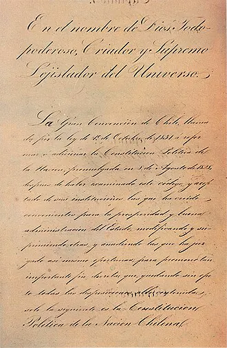

Constitución de 1833

Promulgada el 25 de mayo de 1833, durante el gobierno de José Joaquín Prieto, fue elaborada por una Gran Convención en la que destacó el jurista Mariano Egaña. Expresó el proyecto del bando conservador vencedor en la Batalla de Lircay y la idea de gobierno fuerte e impersonal asociada al ministro Diego Portales, aunque él no fue su redactor.
Estableció un presidente con amplias atribuciones, elegido por cinco años y con posibilidad de reelección inmediata, lo que dio origen a los decenios de la República Conservadora. Permitía declarar estado de sitio y solicitar facultades extraordinarias al Congreso. Fijó la religión católica como oficial, con exclusión del ejercicio público de otros cultos, y un sufragio censitario reservado a hombres con propiedad o renta.
Fue reformada varias veces durante la República Liberal: en 1871 se prohibió la reelección inmediata y en 1874 se ampliaron libertades y el derecho a voto. Rigió hasta la Constitución de 1925. La historiografía debate su legado: para unos, fue la base de la estabilidad institucional chilena; para otros, el instrumento de un orden autoritario y oligárquico.
Versión para niños
Una constitución es la ley más importante de un país: dice cómo se gobierna y quién toma las decisiones. El 25 de mayo de 1833, en Santiago, se aprobó una nueva Constitución para Chile. Le dio mucho poder al presidente, porque sus autores querían orden después de años de conflictos. En esa época solo podían votar algunos hombres que sabían leer y escribir y tenían bienes. Las mujeres no votaban.
Para maestros
Nivel sugerido: 1° medio
Objetivo: Analizar los principios de la Constitución de 1833 y su relación con la construcción del orden republicano conservador en el siglo XIX.
Preguntas para la clase:
- ¿Por qué la elite de la época quiso un presidente con tanto poder?
- ¿Quiénes podían votar y quiénes quedaban fuera? ¿Qué nos dice eso sobre la sociedad de entonces?
- ¿Qué aspectos de la Constitución de 1833 cambiaron con las reformas liberales?
Actividad (20–30 min): En grupos, los estudiantes leen extractos seleccionados de la Constitución de 1833 (atribuciones del presidente, religión, ciudadanía) y los comparan con la Constitución actual en una tabla de semejanzas y diferencias. Cierre con una discusión sobre cambio y continuidad.
Fuentes sugeridas: Biblioteca del Congreso Nacional (BCN); Memoria Chilena; Museo Histórico Nacional.
Objetivos de Aprendizaje (Currículum Nacional)
- 6° básico · HI06 OA 03 Describir algunos hitos y procesos de la organización de la república … las características de la Constitución de 1833
- 1° medio · HI1M OA 08 Analizar el periodo de formación de la República de Chile … la relativa estabilidad política alcanzada a partir de la Constitución de 1833
- 1° medio · HI1M OA 09 Caracterizar la consolidación de la República en Chile, considerando la defensa del territorio nacional, el voto censitario
Personajes
Revisión humana pendiente. Cómo se revisa · Reportar un error
Cómo citar: Historia de Chile. (2026). Constitución de 1833. En Historia de Chile: atlas y línea de tiempo. https://moises-salgado.github.io/historia-de-chile/momento/constitucion-de-1833.html